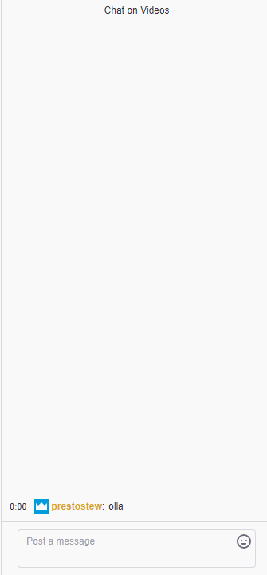
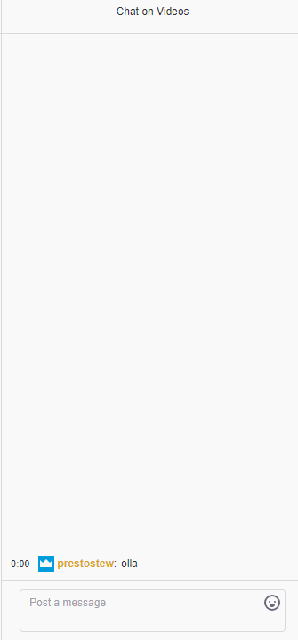

Apex LeagueCompetitiveFree
Event Information
Details: Gamers for Giving 2019 will feature headline tournaments with cash and hardware prize pools. All prize pools are guaranteed. Sponsors and partners help cover event prize pools so that attendee entry fees and donations are used strictly for Gamers Outreach charity programs. Tournaments will be hosted for both PC and console gaming enthusiasts. PC gamers need only purchase a seat in the BYOC LAN to participate in our PC tournaments. Players are allowed to compete in multiple tournaments so long as it does not cause significant delays for other participants (at the discretion of tournament moderators). In general, moderators will accommodate players in such circumstances by slightly delaying matches or completing other portions of the tournament bracket. However, in the event that adjustments can no longer be made, players may be forced to forfeit a match. Players assume all responsibility for such an occurrence.
Slots: 10 / 25
Venue: Stonestown
Date: March 7th, 2019, 6:00 pm - 8:00 pm
Prize: No Prize
Fee: Free
Spots left:
15

Twitch
 
